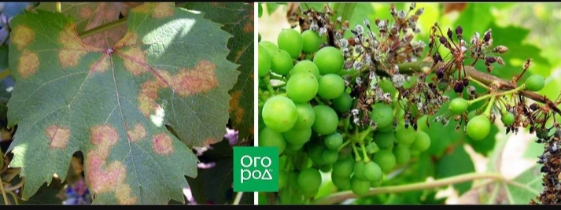
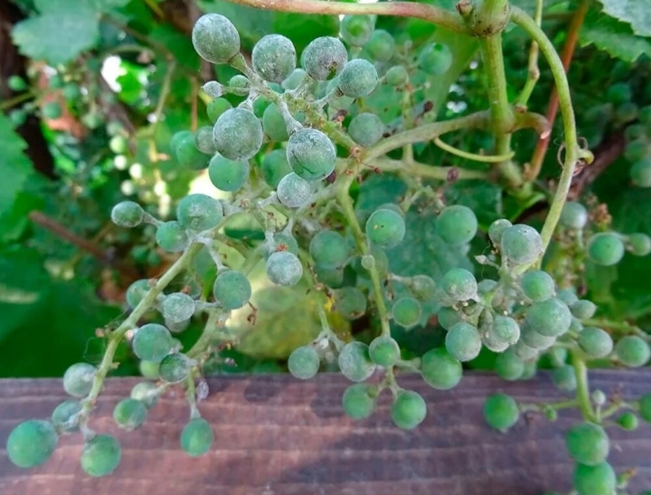
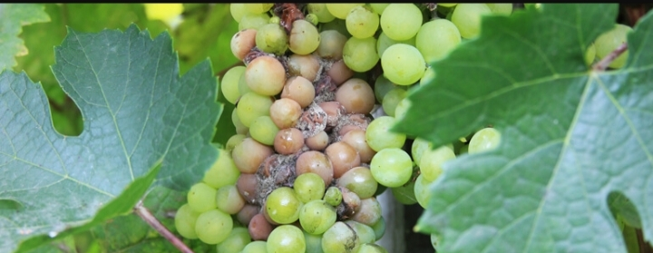
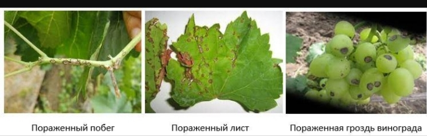
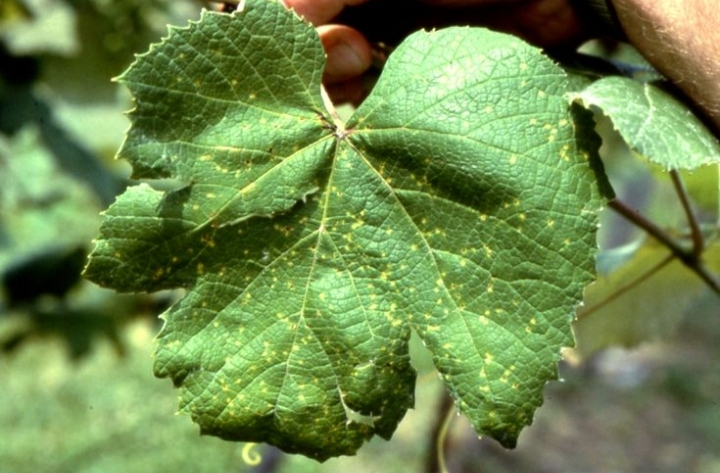
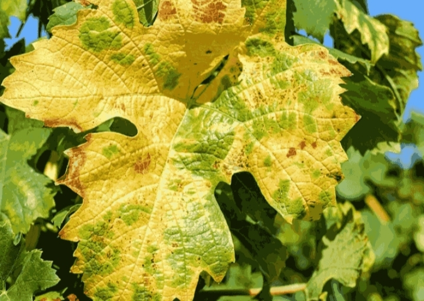

Руководство по диагностике и лечению

Признаки: Желтые "маслянистые" пятна на верхней стороне листа, белый налет снизу.
Чем лечить: Ридомил Голд, Танос, Кабрио Топ, бордоская жидкость (1%).

Признаки: Серо-белый налет (как пепел), запах гнилой рыбы, ягоды трескаются.
Чем лечить: Тиовит Джет, Топаз, Фалькон, препараты серы.

Признаки: Пушистый серый налет на гроздях, ягоды буреют и гниют.
Чем лечить: Свитч, Хорус, Тельдор, Скала.

Признаки: Бурые пятна с темной каймой на листьях и побегах, язвы на лозе.
Чем лечить: Полирам, Антракол, Абига-Пик, хлорокись меди.

Признаки: Черные точки на нижних узлах лозы, растрескивание коры.
Чем лечить: ДНОК (рано весной), Медея, Строби.

Признаки: Листья бледнеют или желтеют, жилки остаются зелеными.
Чем лечить: Хелат железа (Феррилен), внекорневые подкормки.